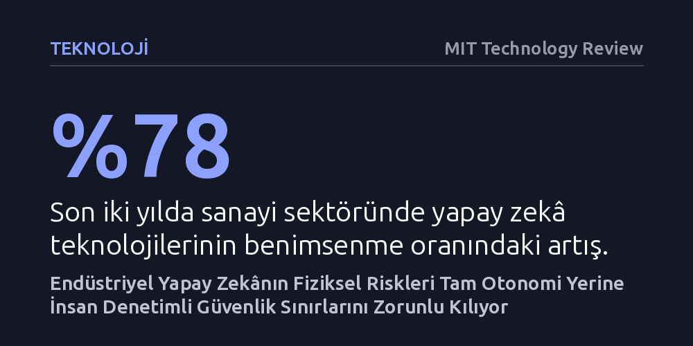

TEKNOLOJI · MIT Technology Review · 2026-10-09
Kritik tesisleri ve makineleri yönetmeye başlayan yeni nesil endüstriyel yapay zekâ, modellerin öngörülemez yapısı sebebiyle tam otonomi yerine insan denetimli güvenlik sınırlarına dayanmak zorunda. Sanayideki kullanım iki yılda yüzde 78 artsa da fiziksel riskler insan muhakemesinin devredilemeyeceğini kanıtlıyor.
Yapay zekânın sadece yazılım ekranlarını değil fabrikaları ve enerji şebekelerini yönettiği bir dünyada, asıl gücün insanı devreden çıkarmakta değil, onu kritik kararların nihai denetçisi konumunda tutmakta yattığını gösteriyor.

Endüstriyel dünyada yapay zekâ aslında yeni bir kavram değil; yirmi yılı aşkın süredir kestirimci bakım, ekipman arıza tahminleri ve özelleşmiş analitik modeller sanayi tesislerinde fiilen kullanılıyor. Ancak son birkaç yılda yaşanan teknolojik kırılma, endüstriyel otomasyonu bambaşka bir aşamaya taşıdı. Temel modeller (foundation models), fiziksel yapay zekâ ve yazılım düzeyinde bağımsız kararlar alabilen ajan yapay zekâ sistemleri, fabrikalardan maden ocaklarına kadar en karmaşık görevleri otonom hale getirme potansiyeli sunuyor.
Bu dönüşümün en can alıcı noktası, yapay zekânın yalnızca dijital pikseller ve yazılım satırlarıyla sınırlı kalmayıp doğrudan fiziksel sistemlerle temasa geçmesidir. Dijital dünyadaki bir algoritma hatası en fazla bir arayüzün çökmesine yol açarken, kimya tesislerinde, enerji şebekelerinde ya da ağır sanayide çalışan bir modelin beklenmedik bir eylemde bulunması doğrudan insan güvenliğini, üretim sürekliliğini ve kritik altyapıları tehdit edebilir. Buna rağmen sanayi sektöründe yapay zekâ benimsenmesi son iki yılda yaklaşık yüzde 78 artarak adeta bir basamak fonksiyonu gibi sıçrama kaydetti.
Sektör liderlerinin karşı karşıya kaldığı temel çelişki tam da burada ortaya çıkıyor: Yeni nesil modeller öncekilere kıyasla çok daha yetenekli ve geniş kapsamlı ancak doğaları gereği davranışlarını önceden tahmin etmek ve matematiksel olarak açıklamak çok daha zor. Hata payının sıfıra yakın olduğu tesislerde, sürekli öğrenen ve evrilen bu sistemlerin nasıl güvenle konuşlandırılacağı sorusu sanayinin en kritik mühendislik tartışmasını oluşturuyor.
Endüstriyel tesislerde bir yapay zekâ sisteminin sağlıklı çalışabilmesi için her şeyden önce doğru ve birbirine bağlı bir veri temeline ihtiyaç duyuluyor. Tipik bir fabrikada veya enerji santralinde veriler genellikle birbirinden kopuk adalarda hapsolmuştur: Bir pompadan ya da karıştırıcıdan gelen anlık telemetri verileri ayrı bir yerde, o ekipmanın geçmiş servis kayıtları ayrı bir veritabanında, orijinal mühendislik tasarım belgeleri ise tamamen farklı arşivlerde tutulur. Arıza anında bir uzmanın tüm bu kaynakları tek tek tarayıp ilişkilendirmesi saatler alabilir.
Günümüzün yeni teknolojileri, özellikle grafik veritabanları ve bağlamsal yapay zekâ modelleri, bu dağınık veri havuzlarını saniyeler içinde birbiriyle eşleştirme kabiliyetine sahip. Bir tesisteki saha operatörü, elindeki tablete düşen anlık bir bildirimle hem mevcut basınç dalgalanmasını hem ekipmanın son bakım tarihini hem de üretici kılavuzundaki ilgili şemayı aynı ekranda görebiliyor. Böylece sorunun kaynağı dakikalar içinde tespit edilip olası bir üretim duruşunun önüne geçilebiliyor.
Bu veri akışı artık insan operatörlerin fiziksel varlığıyla da sınırlı kalmıyor. Fiziksel yapay zekâ ile donatılmış otonom robotlar ve dronlar, yüksek sıcaklık, toksik gaz veya mekanik risk barındıran tehlikeli alanlara doğrudan gönderilebiliyor. Sahadaki veriyi bizzat toplayan, gömülü işlemcileriyle anında işleyen ya da kontrol merkezine ileten bu robotlar, çalışanların hayatını riske atmadan gerçek zamanlı teşhis koymayı mümkün kılarak operasyonel güvenliği bambaşka bir seviyeye taşıyor.
Ajan yapay zekânın yükselişi, endüstriyel sistemlerin tamamen kapalı devre çalışması yani kendi kendine ayar değiştirip süreçleri yürütmesi yönünde büyük bir heves doğuruyor. Ancak endüstriyel güvenlik uzmanları, yapay zekânın insan kararının yerini almasından ziyade insan muhakemesini güçlendirmesi gerektiğinde ısrarcı. Sanayide dönüşüm, insanı operasyonel işleri bizzat yapan bir operatörden, sistemin sınırlarını belirleyen ve onu yukarıdan gözetleyen bir 'denetçi' konumuna taşımayı hedefliyor.
Bir kimya reaktöründe veya rafineride ayar noktalarının (set point) yapay zekâ tarafından otomatik olarak değiştirilmesi saha mühendislerini haklı olarak tedirgin ediyor. Bu nedenle güvenli bir otomasyon mimarisi, yapay zekânın yalnızca önceden belirlenmiş katı çalışma bantları içinde otonom hareket etmesine izin veriyor. Model sınırların dışına çıkmak istediğinde veya beklenmedik bir belirsizlikle karşılaştığında kontrol zorunlu olarak insan uzmanına devrediliyor. Bu yaklaşım, sistemin hızından faydalanırken öngörülemez davranışların yol açabileceği felaketleri engelliyor.
İnsanın merkezde tutulması aynı zamanda sanayideki derin iş gücü krizine karşı da bir kalkan görevi görüyor. Sektör verileri, endüstriyel iş gücünün neredeyse yarısının önümüzdeki beş yıl içinde emekliye ayrılacağını gösteriyor. Yılların tecrübesine sahip bu personelin sahada edindiği sezgisel bilgi birikimi yapay zekâ sistemleri aracılığıyla sayısallaştırılıp yeni kuşak çalışanların kullanımına sunulmadığı takdirde, sanayi tesislerinde ciddi bir kurumsal hafıza kaybı ve uzmanlık boşluğu yaşanması kaçınılmaz görünüyor.
Otonom yapay zekânın en somut sınavlarından biri enerji şebekelerinde yaşanıyor. Güneş ve rüzgâr gibi kesintili ve dağınık yenilenebilir enerji kaynaklarının şebekeye entegrasyonu arttıkça, elektrik frekansını ve yük dengesini geleneksel yöntemlerle yönetmek imkânsız hale geliyor. Yapay zekâ, şebekedeki anomalileri milisaniyeler mertebesinde tespit edip dengeleyici müdahalelerde bulunarak temiz enerjiye geçişin teknik omurgasını oluşturuyor.
Ne var ki yapay zekâ bir yandan yeşil dönüşümü desteklerken diğer yandan kendi muazzam enerji ve kaynak tüketimiyle yeni bir çevresel yük yaratıyor. Kamuoyunda tek bir yapay zekâ sorgusunun litrelerce su veya kilovatsaatlerce elektrik tükettiğine dair haberler sıkça yer alsa da endüstride bu etkiyi ölçecek üzerinde uzlaşılmış küresel bir standart henüz bulunmuyor. Bu belirsizliği gidermek adına IEEE bünyesinde başlatılan P7100 çalışma grubu; elektrik tüketimi, su kullanımı, karbon salımı ve donanım kaynaklarını kapsayan bütüncül bir ölçüm metodolojisi geliştirmeye çalışıyor.
Burada ulaşılan en çarpıcı mühendislik sonucu, çevresel verimlilik ile operasyonel güvenliğin birbirini doğrudan beslemesidir. Her iş için devasa genel amaçlı modeller kullanmak yerine, belirli bir endüstriyel göreve odaklanan amaca özel (purpose-built) ve optimize edilmiş modeller seçildiğinde hem bilgi işlem ve enerji maliyetleri düşüyor hem de modelin beklenmedik, hatalı davranışlar sergileme olasılığı asgari düzeye iniyor.